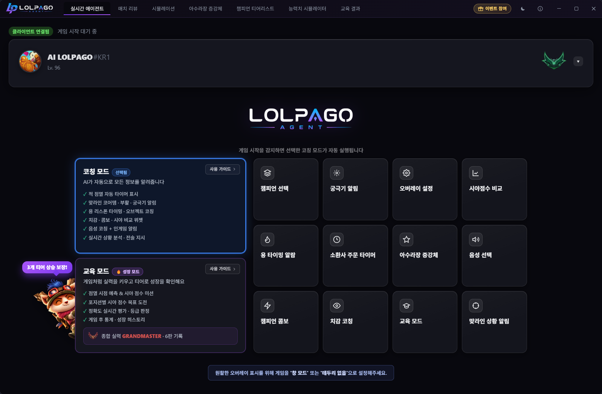
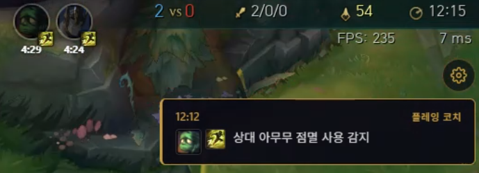
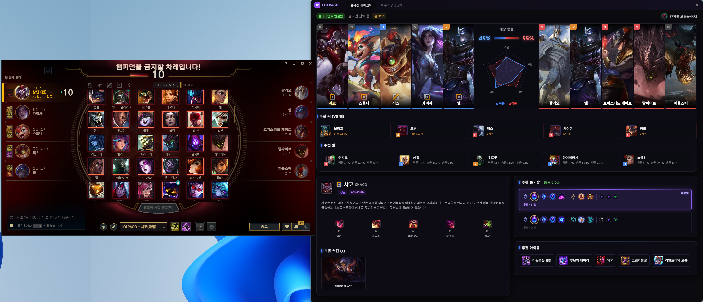

실시간 코칭 데스크톱 앱 개발과 운영
화면을 만드는 데서 끝나지 않았습니다. 사용자의 실제 실행 환경에서 생기는 성능 문제와 설치 문제까지 맡아 버전을 이어왔습니다.
맡은 범위
경기 데이터와 실시간 정보를 바탕으로 코칭을 전달하는 Windows 데스크톱 앱입니다. 서비스 기획과 화면 설계부터 클라이언트 구현, 빌드와 배포, 운영 중 문제 대응까지 한 사이클을 맡았습니다.

사용자는 게임 중이라 화면을 오래 읽을 수 없습니다. 화면에는 타이머와 알림만 남기고 설명이 필요한 조언은 음성으로 보냈습니다. 공식 API로 확인되지 않는 정보는 화면 캡처와 비전 인식 및 OCR로 보완했습니다.

시스템 구성
수집한 경기 데이터를 MySQL에 저장하고 서비스에서 쓰기 쉬운 형태로 가공해 자체 API로 제공했습니다. 실시간 구간은 WebSocket으로 연결하고 분석 결과를 화면과 음성에 나눠 전달했습니다.
역할을 요약한 개념도입니다. 모든 경로를 직렬로 처리한다는 뜻은 아닙니다.

운영 중 해결한 문제
따로 보이던 두 증상이 같은 경로에서 나왔습니다
앱 단독 실행에서는 없던 프레임 저하가 게임과 동시에 실행할 때 나타났고, 오래 켜 둘수록 메모리도 계속 늘었습니다. 처음에는 별개 문제로 보였지만 화면을 캡처해 서버로 보내는 경로를 따라가 보니 원인이 같았습니다.
이미지를 문자열로 바꿔 보내던 방식을 바이너리 규격으로 교체하고 캡처 주기와 프로세스 간 전달 구조를 정리했습니다.
게임 동시 실행 시 확인한 프레임 변화입니다. 틱당 전송량은 약 24% 줄었고 장시간 실행 시 누적되던 메모리 증가도 함께 해결했습니다.
개발 과정에서 관찰한 환경 기준의 수치입니다. 전송 방식과 처리 구조를 함께 바꾼 결과이며 모든 PC의 성능을 보장하지는 않습니다.
특정 환경에서만 클라이언트를 찾지 못했습니다
개발 환경에서는 정상 동작했지만 일부 사용자 환경에서만 게임 클라이언트를 인식하지 못했습니다. 환경마다 예외를 더하는 대신 감지 방식의 전제를 다시 확인했고 설치 경로에 의존하는 구조가 원인이었습니다.
실행 중인 프로세스에서 접속 정보를 직접 읽는 보완 경로를 설계하고, 기존에 정상 동작하던 사용자는 원래 경로에서 끝나도록 두어 실패한 경우에만 폴백이 작동하게 했습니다.
배포와 그 이후
코드 서명과 설치 프로그램을 구성하고 자동 업데이트를 붙여 사용자가 새 버전을 따로 내려받지 않아도 되게 했습니다. 배포 이후에는 실행 환경에서 올라오는 문의를 받아 원인을 좁히고 수정 버전을 올렸습니다.
버전을 올릴 때마다 같은 항목을 다시 점검해 이전에 고친 문제가 재발하지 않는지 확인했습니다. 코드를 작성한 시점이 아니라 실제 환경에서 동작을 확인한 시점을 작업의 끝으로 두었습니다.
직접 개발한 LOLPAGO 웹사이트 ↗남은 기준
기능 구현과 배포를 별개의 일로 보지 않게 됐습니다. 수정한 코드뿐 아니라 화면과 음성처럼 다른 전달 경로에도 영향이 남는지 확인합니다.
금융 서비스도 한번 열리면 멈추기 어렵습니다. 증상이 난 자리만 고치기보다 데이터가 어디서 생겨 어떤 경로로 전달되는지 따라가 원인에서 막는 방식으로 일하겠습니다.